Ordine repo-local per Codex e Paseo
unaSquadraFortissimi
Uno scheletro curato e copiabile per progetti gestiti da agenti: 22 specialisti Codex, 25 skill repo-local e routing aggiornato tra modelli forti, ruoli leggeri e verifica.
Metodo verificato dalla repo
Prima contesto, poi delega, infine prove.
Le sezioni seguenti sono derivate da AGENTS.md, docs/agent-catalog.md,
docs/agent-workflows.md, .codex/agents/*.toml e
.agents/skills/*/SKILL.md.
Aggiornamento modelli
Routing più netto tra potenza, costo e velocità.
I TOML locali assegnano gpt-5.5 a 13 agenti di implementazione, review,
analisi, prodotto e architettura. Altri 9 agenti usano gpt-5.4-mini per
contesto, documentazione, evidenza, accessibilità, dipendenze, test mirati e ricerca UX.
13 / 9
gpt-5.5 per i ruoli più pesanti, gpt-5.4-mini per quelli più leggeri.
6 / 12 / 4
High, medium e low restano graduati per rischio e profondità richiesta.
16 / 6
La maggioranza è read-only; solo build, docs, test e fix stretti scrivono nel workspace.
- 01Leggi AGENTS, README, docs e superficie interessata.
- 02Restringi la modifica al minimo coerente con la richiesta.
- 03Delega solo quando uno specialista riduce rischio o rumore.
- 04Verifica con comandi, screenshot, log o controlli dichiarati.
Roster Codex
Gli agenti della squadra
Ogni scheda usa dati reali dai TOML locali: trigger, modello, reasoning, sandbox e focus operativo.
Contesto e design
context_manager
Quando serve un pacchetto compatto di contesto prima di implementazione, review o delega.
- Model
- gpt-5.4-mini
- Reasoning
- low
- Entry point e confini rilevanti
- Regole da AGENTS, docs e config
- Fatti, assunzioni e incognite separati
architect
Quando contano confini architetturali, flusso dati, migrazioni o decisioni cross-module.
- Model
- gpt-5.5
- Reasoning
- high
- Boundary tra UI, API, dominio e dati
- Compatibilità, rollback e osservabilità
- Sequenza implementativa minima
minimal_change_engineer
Quando il rischio principale è scope creep, overengineering o una fix che deve restare piccola.
- Model
- gpt-5.4-mini
- Reasoning
- medium
- Restituisce l'interpretazione letterale
- Cambia solo i file necessari
- Lascia follow-up fuori dal diff
Implementazione
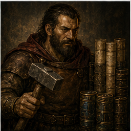
backend_developer
Per API, servizi, worker, auth o persistenza dopo che il path proprietario è chiaro.
- Model
- gpt-5.5
- Reasoning
- medium
- Validazione input e contratti output
- Transazioni, idempotenza, retry e timeout
- Authn/authz nei path toccati
frontend_developer
Per UI, state, route, componenti e user flow con comportamento visibile.
- Model
- gpt-5.5
- Reasoning
- medium
- Transizioni di stato esplicite
- Loading, empty, error e success state
- Keyboard/focus e responsive risk
devops_engineer
Per CI, release, deployment, configurazione ambiente e affidabilità operativa.
- Model
- gpt-5.5
- Reasoning
- medium
- Build deterministiche e artefatti
- Diagnostica CI, cache e flaky step
- Gestione segreti e drift ambiente
technical_writer
Per README, API docs, runbook, migration guide, release notes e documentazione developer.
- Model
- gpt-5.4-mini
- Reasoning
- low
- Comandi setup/run/test/deploy verificati
- Contratti API ed esempi
- Gotcha e troubleshooting
Review e rischio
reviewer
Review PR-style per correttezza, regressioni, sicurezza e test mancanti.
- Model
- gpt-5.5
- Reasoning
- medium
- Findings ordinati per severità
- Evidenza da file, linee, comandi o comportamento
- Fix minima raccomandata
typescript_reviewer
Review TS/JS per type safety, async behavior e runtime correctness.
- Model
- gpt-5.5
- Reasoning
- medium
- Cast insicuri, any e nullability
- Promise non gestite, race e cancellazione
- Boundary modulo, env e runtime
react_reviewer
Review React, JSX, TSX, hook, rendering, accessibilità e boundary server/client.
- Model
- gpt-5.5
- Reasoning
- medium
- Hook condizionali e dependency errate
- State mutation e chiavi instabili
- Next.js server/client leaks
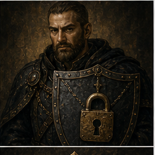
security_auditor
Audit di auth, segreti, input validation, dipendenze e configurazioni infrastrutturali.
- Model
- gpt-5.5
- Reasoning
- high
- Boundary authn/authz
- Injection resistance e secret handling
- Default insicuri e supply-chain
database_reviewer
Review di schema, SQL, migrazioni, indici, RLS, locking e performance database.
- Model
- gpt-5.5
- Reasoning
- high
- Vincoli, cardinalità e integrità
- Query plan, N+1 e indici
- Lock, isolation e backfill safety
dependency_reviewer
Review di pacchetti, plugin, licenze, lockfile e rischio supply-chain.
- Model
- gpt-5.4-mini
- Reasoning
- high
- Advisory e versioni vulnerabili
- Lockfile riproducibili
- License, bundle size e manutenzione
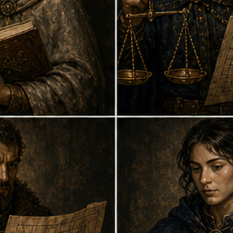
accessibility_tester
Review WCAG-oriented per UI web, keyboard, semantica, label, focus e contrasto.
- Model
- gpt-5.4-mini
- Reasoning
- high
- Native semantics prima di ARIA
- Focus visibility e heading structure
- Alt text e status announcements
Verifica e diagnosi
test_automator
Aggiunge test mirati per behavior, regressioni e workflow critici.
- Model
- gpt-5.4-mini
- Reasoning
- medium
- Un test piccolo che fallirebbe senza la fix
- Fixture deterministiche
- Success path più edge significativo
evidence_collector
Raccoglie prove: screenshot, log, comandi, riproduzioni e mismatch osservati.
- Model
- gpt-5.4-mini
- Reasoning
- low
- Screenshot per claim UI
- Output comandi per build/test/runtime
- Gap di verifica espliciti
debugger
Isola bug da sintomi, stack trace, runtime behavior, test falliti o flakiness.
- Model
- gpt-5.5
- Reasoning
- high
- Trigger-to-symptom mapping
- Differenze ambiente/config
- Riproduzione minima e prevenzione ricorrenza
performance_optimizer
Analisi di latenza, bundle, memoria, Core Web Vitals e bottleneck misurabili.
- Model
- gpt-5.5
- Reasoning
- medium
- Hot path, memoria e lavoro ripetuto
- Bundle, code splitting e render churn
- LCP, INP, CLS e TBT
Prodotto, ricerca e AI quality
docs_researcher
Verifica comportamento API, framework, versioni e opzioni da documentazione primaria.
- Model
- gpt-5.4-mini
- Reasoning
- medium
- Default, caveat e deprecazioni
- Contratti API e failure mode
- Fatti documentati separati da inferenze
product_manager
Framing prodotto, scope, PRD, tradeoff, acceptance criteria e success signal.
- Model
- gpt-5.5
- Reasoning
- low
- Problema e target user
- Now/next/later scope
- Criteri verificabili
ux_researcher
Sintesi di utenti, journey, rischi di usabilità, personas e validazione leggera.
- Model
- gpt-5.4-mini
- Reasoning
- medium
- Jobs-to-be-done e contesto
- Friction, accessibilità e trust
- Evidence separata da preferenze
eval_engineer
Disegna eval per prompt, retrieval, tool use, workflow agentici e criteri regressione.
- Model
- gpt-5.5
- Reasoning
- medium
- Scenario coverage legata a task reali
- Rubriche e soglie pass/fail
- Cost, latency e regression thresholds
Skill repo-local
25 rituali operativi, piccoli e verificabili
Le skill sono raggruppate come nel catalogo. Ogni scena è generata per rappresentare il workflow,
mentre titolo, descrizione e passaggi sono testo HTML verificato dai file SKILL.md.
Discovery e planning
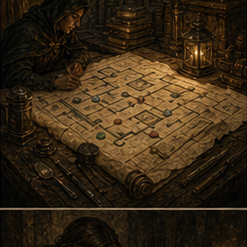
repo-discovery
Primo passaggio in repo sconosciute: esplora root, docs e comandi rilevanti.
- Ispeziona root e manifest
- Leggi AGENTS, README e docs
- Separa fatti, assunzioni e unknown
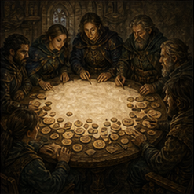
brainstorming
Per idee creative, prodotto, architettura o UX quando direzione e successo non sono chiari.
- Riformula goal e vincoli
- Offre 2-3 approcci se utili
- Converte in acceptance criteria
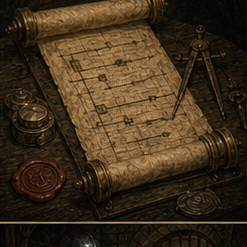
planning-contract
Per lavoro sostanziale o rischioso che richiede un piano decision-complete.
- Grounding in evidenza repo
- Goal, non-goal e vincoli
- Verifica e acceptance criteria
writing-plans
Piani implementativi con sequenza, superfici toccate, verifica e rischi.
- Definisce goal e rischio
- Fasi verificabili
- Rollback o recovery se serve
Orchestrazione
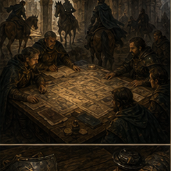
subagent-driven-development
Usa subagenti solo quando workstream indipendenti riducono rischio o contesto.
- Conferma piano concreto
- Sceglie pochi agenti utili
- Integra e verifica nel parent
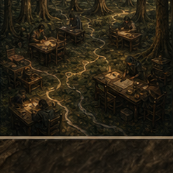
using-git-worktrees
Isola feature work o workstream paralleli senza disturbare il checkout corrente.
- Rileva worktree e submodule
- Chiede prima di creare
- Preferisce .worktrees ignorato
Build discipline
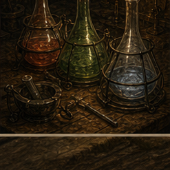
tdd-workflow
Quando un comportamento può essere protetto da test, soprattutto bug fix e logica condivisa.
- Definisce behavior atteso
- Test fallente rilevante
- Fix minima e refactor solo utile
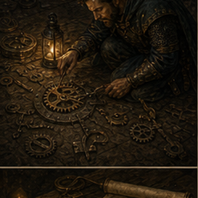
systematic-debugging
Per bug, test falliti, flaky behavior, runtime error e regressioni non spiegate.
- Cattura sintomo esatto
- Riduce a caso osservabile
- Ipotesi con check falsificanti
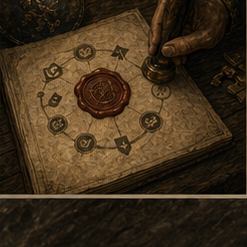
verification-loop
Prima di dichiarare completezza: check mirati, fallimenti ispezionati e rischio residuo.
- Identifica failure mode
- Run check stretti
- Riporta cosa è stato e non è stato verificato
branch-finish
Chiusura branch: diff review, artefatti accidentali, segreti, scope e verifica.
- git status --short --branch
- Review diff e rumore generato
- Riassume check e rischio
Review e rischio
code-review
Stance PR-review: findings prima, evidenza sempre, bugs e regressioni sopra lo stile.
- Identifica base e diff
- Legge contesto circostante
- Ordina findings per severità
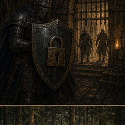
security-review
Per auth, segreti, input handling, dipendenze, config o esposizione production.
- Mappa asset e trust boundary
- Controlla auth, input e segreti
- Rank per impatto e likelihood
dependency-review
Gestione terze parti: package manager, licenze, advisory, lockfile e rollback.
- Identifica manifest e runtime
- Motiva la dipendenza
- Valuta licenza, security e bundle
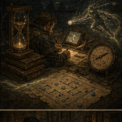
performance-audit
Performance measurement-led: latency, bundle, memory, database e Core Web Vitals.
- Definisce metrica e soglia
- Misura prima di ottimizzare
- Prioritizza impatto, confidenza e rischio
accessibility-audit
Review pratica per keyboard, screen reader support, semantica e rischio WCAG.
- Keyboard navigation end-to-end
- Landmark, heading, label e role
- Contrasto e focus visibility
evidence-qa
Evita claim non supportate: screenshot, log, test output e riproduzioni dirette.
- Elenca le claim
- Sceglie evidenza diretta
- Registra pass, fail e gap
Prodotto, ricerca e documentazione
prd-writing
Requisiti eseguibili: problema utente, goal, non-goal e acceptance criteria.
- Definisce problema e pubblico
- Journey e requirements
- Criteri testabili
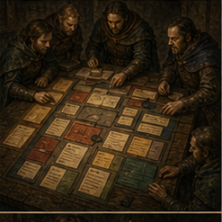
feature-request-triage
Trasforma richieste in opportunità prioritarie: impatto, reach, effort, rischio.
- Raggruppa per problema utente
- Stima impatto e rischio
- Raccomanda now/next/later
recent-research
Per decisioni che dipendono da informazioni correnti o segnali esterni recenti.
- Definisce domanda e finestra
- Preferisce fonti primarie
- Separa fatti, segnali e interpretazione
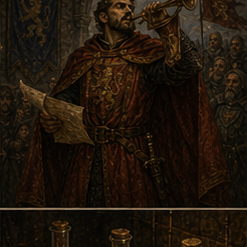
release-notes
Traduce diff e PR in comunicazione utile per utenti e stakeholder.
- Separa user-visible e maintenance
- Raggruppa Added, Changed, Fixed
- Segnala migration o known issue
technical-writing
README, runbook, API docs, troubleshooting e migration docs accurate.
- Identifica lettore e task
- Verifica comandi e path
- Preserva gotcha e prerequisiti
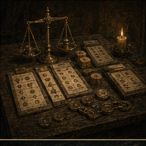
eval-design
Rende misurabili prompt, AI feature, retrieval, tool workflow e agent behavior.
- Obiettivo eval e workflow
- Scenario matrix e rubric
- Soglie e decision rule
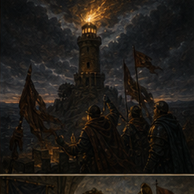
incident-response
Incidenti production: stabilizzare, preservare evidenza, verificare recovery.
- Impatto, timeline e severità
- Rollback o mitigazione prima
- Root cause solo dopo evidenza
Frontend taste
frontend-taste
UI polish, hierarchy, spacing, controlli usabili e responsive text fit.
- Inferisce audience e job
- Sceglie direzione coerente
- Verifica responsive layout
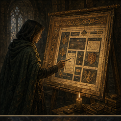
design-taste-frontend
Workflow anti-slop per landing e redesign con art direction più forte.
- Legge brief prima del codice
- Fissa design read e dials
- Esegue pre-flight visual audit
Playbook Paseo
Orchestrazione leggera, non sostituzione del lavoro locale.
Il playbook della repo prescrive un flusso single-agent di default. Paseo entra quando advisor, committee, handoff o loop riducono concretamente rischio, incertezza o lavoro ripetitivo.
Default flow
Un agente Codex legge contesto, implementa il minimo sicuro, verifica e riporta rischio residuo.
Advisor
Seconda opinione breve per tradeoff architetturali, root cause incerta o design sensibile.
Committee
Analisi più profonda per problemi bloccati, refactor rischiosi o requisiti conflittuali.
Handoff
Passaggio completo di goal, stato repo, file, comandi, open question e prossimo step.
Loop
Iterazione autonoma solo con criterio verificabile: test passa, comando pulito, UI controllata.
Fonti e confini
Presentazione, non duplicato del README.
La pagina racconta la squadra. Le fonti operative restano linkate e verificabili nella repository.